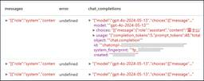
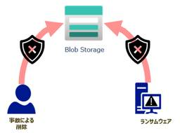
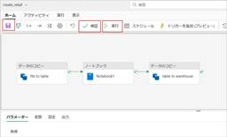
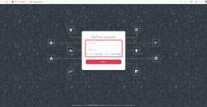
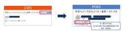

JBS Tech Blog
https://blog.jbs.co.jp/
JBS Tech Blogは、日本ビジネスシステムズ（JBS）の社員が分担して執筆を担当し、技術情報を発信しているブログです！
フィード

AWS DataSyncを使ってAmazon S3のログを移行させてみた。#2 実践編 1
1
JBS Tech Blog
前回の#1では、AWS DataSyncはどういったサービスか、オンプレミスからのデータ移行にDataSyncが用いられる理由、実際にデータ移行をするための権限周りの準備などを紹介していきました。 1をまだ見ていないよという方がいらっしゃいましたら、ぜひ以下から一読していただいたうえで#2を読んでいただければと思います。 AWS DataSyncを使ってAmazon S3のログを移行させてみた。#1準備編 - JBS Tech Blog 実際にログを移行させてみた 移行元ロケーションの作成 移行先ロケーションの作成 タスクの作成 タスクの実行と転送 最後に 実際にログを移行させてみた 移行元ロ…
1日前

Azure Synapse AnalyticsでAzure OpenAIのLLMを利用する【2. SynapseMLを利用した一括処理】 1
JBS Tech Blog
Azure Synapse Analytics上でSynapseMLを活用し、Azure OpenAI ServiceのLLMを用いて大量の自然言語データを一括で処理する方法を紹介します。
1日前
【Juniper Networks】MX204におけるinet filter, bridge filterの設定例 1
JBS Tech Blog
前回の記事にてfilter設定について少し触れましたので、今回はそのfilter設定について解説します。 MX-SeriesのMX204にてinet filterとbridge filterの設定を作成する機会がありましたので、その際に行った設計例の紹介と、それぞれの設定行について解説します。 inet filterの設定例 インターフェースの設定 フィルターの設定 bridge filterの設定例 インターフェースの設定 フィルターの設定（+ポリサーの設定） 設定例についてのまとめ inet filterの設定例 まずはinet filterの設定例です。これはルータであるMX204の一般…
1日前

【Microsoft×生成AI連載】【Outlook】Microsoft OutlookでのCopilot活用法: メールの管理 1
JBS Tech Blog
【Microsoft×生成AI連載】シリーズの記事です。 本記事では会議などをセットするときに使う「Microsoft Outlook」（以下、Outlook）で利用可能なCopilotの機能についてご紹介します。 これまでの連載 OutlookのCopilot紹介 メールの分類ルールを自動で作成 特定の人からのメールを別フォルダに移動させるルールを自動で作成 すでに作成しているフォルダに移動させる フォルダを新規作成し、そのフォルダに移動させる 利用シーンとメリット、注意点 利用シーン メリット 注意点 まとめ おまけ(Copilot Chatによる本記事の要約) これまでの連載 これまでの…
2日前
【Jamf】macOSにて最新ソフトウェアアップグレードの適用を制限する方法 1
JBS Tech Blog
macOSでは定期的にソフトウェアアップデートやアップグレードがリリースされていますが、まだ最新のアップグレードをユーザーのデバイスに適用させたくない、というケースもあるかと思います。*1 そのようなとき、Jamfを使用すればmacOSのアップグレードを一時的に制限することができます。 本記事では、「macOSへの最新アップグレード適用を制限する」設定手順をご紹介します。 必要なこと 手順 制限付きソフトウェアの設定 構成プロファイルでのOS適用制限 最後に 必要なこと macOSへの最新アップグレード適用を制限するためには、以下の2つの設定が必要です。 制限付きソフトウェアの設定 Apple…
4日前
【Microsoft×生成AI連載】【PowerPoint】Copilotを使用した翻訳、書き換え、スピーカーノートの起草
JBS Tech Blog
本記事では、Microsoft PowerPointのCopilotで新たに追加された機能から、翻訳、書き換え、スピーカーノートの起草について紹介しています。
4日前
VMware Workstation Pro が無償化されたので試してみた (3) 1
JBS Tech Blog
本記事では、商用利用も含めて無償化された仮想化ソフトウェアである VMware Workstation Pro のうち、VMware Workstation Player*1 ではサポートされていない機能について、簡単にご紹介いたします。 過去の記事と併せてご覧ください。 ダウンロード、およびインストール方法 仮想マシンを作成する方法 VMware Workstation Playerではサポートされていない機能（本記事） スナップショット スナップショットの作成 スナップショットの復元 スナップショットの削除 リモートサーバへの接続 最後に スナップショット スナップショットとは、仮想マシン…
4日前
タイタニックの乗客生存予測モデルをFabricで作成してみた。（その２） 1
JBS Tech Blog
今回は、実際の機械学習モデルの作成の前にデータの欠損値の補完やデータの型変換を実施します。 前回の「 タイタニックの乗客生存予測モデルをFabricで作成してみた。（その１）」の続きとなります。 blog.jbs.co.jp 機械学習におけるデータ加工と前処理の必要性 特徴量エンジニアリング～特徴量の選択 データのクレンジング～欠損値の処理 出港地カラム 年齢カラム 特徴量エンジニアリング～新しい特徴量の作成 カテゴリ関数変換 出港地のワンホットエンコーディング 性別のラベルエンコーディング まとめ 機械学習におけるデータ加工と前処理の必要性 以下の点から、機械学習を行う前にデータ加工と前処理…
5日前

Azure Blob Storage の不変ストレージを知ろう【前編】
JBS Tech Blog
データが重要な価値を持つ現代、特に法的な証拠や監査ログなど、保護が求められる情報をどのように管理するかは、企業や組織にとって重要な課題です。悪意のある攻撃や内部のミスによって、大切なデータが変更されることは避けなければなりません。Azure Blob Storageの不変ストレージ
5日前
Nutanix Community Edition 環境の構築 Part6 1
JBS Tech Blog
前回の記事では、Nutanix Moveによる移行方法を紹介をさせていただきました。 今回はNutanix Flowの利用方法について紹介していきます。 本章での検証範囲 Nutanix Flowについて Nutanix Flowセキュリティタイプについて Nutanix Flow カテゴリーについて Nutanix Flow検証手順 Prism Centralのデプロイ Flowの設定 Flowの動作確認 最後に 本章での検証範囲 本記事では、前回の記事で紹介した6ステップのうち、ステップ6の「Flow 利用方法」について記載します。 Nutanix CE インストーラー入手 Nutanix…
5日前

Microsoft Fabricを利用した月次ファイルの連携方法【後編】
JBS Tech Blog
前回はレイクハウスとノートブックを利用して、データの取り込みと簡単な加工を行いました。Microsoft Fabricを利用した月次ファイルの連携方法【前編】 - JBS Tech Blog今回はその続きとしてウェアハウスを作成し、パイプラインの実行、Power BIでの簡単な可視化を実施します。 ウェアハウス ウェアハウスの作成 ウェアハウスへのデータコピー （補足）実行完了後の処理 Power BI Power BIを用いた可視化 終わりに ウェアハウス ウェアハウスの作成 最初にデータを蓄積するためのウェアハウスを作成します。[作成]を押下し、表示される新規の一覧からData Wareh…
5日前

Netflow Analyzerの概要とネットワーク機器への監視設定手順について
JBS Tech Blog
利用しているネットワークの速度が遅いとき、ご利用環境のどこがボトルネックとなっているかを特定するのに時間がかかることはありませんか？ そのような時に役立つのが、Netflow Analyzerです。Netflow Analyzerはご利用環境のネットワークフローを可視化し、トラフィックを監視、解析することが可能です。 本記事ではNetflow Analyzerの概要とネットワーク機器への監視設定手順についてご紹介します。 Netflow Analyzerの概要 デモ環境の準備 Netflow Analyzerの監視手順 Ciscoルータの設定 Netflow AnalyzerのSNMP設定 ロ…
5日前
イーサネットテザリングを利用したインターネット接続 1
JBS Tech Blog
本記事では、イーサネットテザリングを利用してインターネット接続をする方法について試しみました。 概要 構成 検証環境構成図 検証環境にて利用した機器 設定内容 ルーター PC Androidスマートフォン 確認 ルーター PC おわりに 概要 ルーターのWANポートに有線LANアダプタを接続したスマートフォンを接続し、WANポートのIPアドレスをDHCPで取得するように設定します。 LANポートに接続したPCは固定IPアドレスを設定し、PATによりWANポートのIPアドレスに変換してインターネット接続が可能となります。 構成 検証環境構成図 検証環境にて利用した機器 検証環境において利用した機…
5日前
Nutanix Community Edition 環境の構築 Part5 1
JBS Tech Blog
前回の記事では、AsyncDRの概要と設定方法の紹介をさせていただきました。 今回はNutanix仮想基盤への移行をサポートするNutanix Moveついて紹介していきます。 本章での検証範囲 Nutanix Moveについて Nutanix Moveポート要件について Nutanix Move 利用方法 Nutanix Moveのインストール Nutanix Moveの設定 移行元ESXi環境の設定 移行先環境の追加 結果まとめ 移行時の準備 仮想マシンの移行 最後に 本章での検証範囲 本記事では、前回の記事で紹介した6ステップのうち、ステップ5の「Nutanix Move 移行方法」につ…
6日前

MigrationWizを使用してGmailからExchange Onlineへメールデータ移行をする際のラベルの変換における仕様および注意点
1
JBS Tech Blog
MigrationWizを使用し、GmailからExchange Onlineへメールデータ移行をする際に、Gmailのラベルを変換する必要があります。今回はそれぞれの変換方法における仕様および注意点についてご紹介します。 MigrationWizのテナント作成方法はこちら(MigrationWizのテナント作成手順 - JBS Tech Blog)を参照ください。 ラベル変換 1.ラベルをカテゴリ(分類)に変換 2. ラベルをフォルダに変換 各方法のメリット・デメリット おわりに ラベル変換 GmailからExchange Onlineへメールデータ移行をする際に、Exchange Onli…
6日前

MigrationWizを使用してGoogleDriveからOneDriveへデータ移行をする際の移行モード
JBS Tech Blog
先日、MigrationWizのテナントの作成方法についてご紹介しました。(MigrationWizのテナント作成手順 - JBS Tech Blog) 今回は、MigrationWizを使用してGoogleDriveからOneDriveへデータ移行をする際に選択する「移行モード」についてご紹介します。 移行モード Strict Mode Full Copy Mode 各モードの仕様 おわりに 移行モード MigrationWizを使用し、GoogleDriveからOneDriveへデータ移行をする際に、2種類の移行モードが利用できます。 Strict Mode Full Copy Mode …
8日前
【Microsoft×生成AI連載】Microsoft 365 Copilot Chatを活用して問い合わせメールの要約とナレッジ化を行ってみた
JBS Tech Blog
Microsoft 365 Copilot Chatを活用して、問い合わせメールの要約からナレッジ化までのプロセスを詳解。音声入力で迅速な対応を実現し、業務効率を飛躍的に向上させる方法を紹介します。
9日前
Microsoft Fabric Apache Sparkジョブ定義を使ってみた
JBS Tech Blog
Data&AI事業本部所属の福濵です。2023年に入社しMicrosoft Fabricについて基礎から勉強しています。 本記事では、Apache Sparkジョブ定義の実装方法についてご紹介します。 はじめに Apache Sparkジョブ定義実装の全体像 構成図 実装 前準備 csvファイルの準備 スクリプトフファイルの準備 レイクハウスの作成 サンプルファイルの格納 Sparkジョブ定義の作成 Sparkジョブ定義の実行 実行結果の確認 おわりに はじめに Apache Sparkジョブ定義（以降、Sparkジョブ定義）とは、Data Engineeringにあるアイテムの1つです。 S…
9日前
IntuneからMicrosoft Storeアプリの起動をブロックする
JBS Tech Blog
Intune管理デバイスに対して、Microsoft Storeアプリの起動をブロックする方法をご紹介します。
10日前
【Microsoft Fabric】パイプラインによるデータ処理の自動化と通知設定 後編
JBS Tech Blog
前編ではデータを加工するデータフローの作成までを紹介しましたが、後編である今回は、データ処理を自動化するパイプラインの構築と通知設定、データの可視化までを紹介します。 前編はこちらですので、併せてご覧ください。 blog.jbs.co.jp データの取得・加工・格納を自動化するパイプラインの構築 パイプライン実行時に古いデータを削除する パイプラインの通知設定 パイプラインの定期実行 データのクリーンアップについて パイプラインの動作確認 データの可視化 まとめ データの取得・加工・格納を自動化するパイプラインの構築 前編で作成した生データをレイクハウスに取り込むパイプライン（test_pil…
10日前
Red Hat Enterprise Linux 9.3以降のGRUB設定
JBS Tech Blog
Red Hat Enterprise Linux(以降 RHEL)ではブートローダーとしてGRUB(GRUB2)が採用されており、ブートオプションを変更するにはGRUBの設定を編集する必要があります。 RHEL9.3以降からこのGRUB設定が従来と変わっているため、設定手順について記載します。 ブートローダーとは 設定方法 最後に ブートローダーとは サーバーに電源が投入されBIOS(UEFI)が最初に起動させるプログラムで、カーネルをメモリ上にロードする役割を持ちます。 設定方法 従来では以下のコマンドで設定変更、反映させていました。 # vi /etc/default/grub # gru…
10日前
【Oracle統合監査】統合監査の運用
JBS Tech Blog
以前の記事で、Oracle統合監査の動作を検証しました。 blog.jbs.co.jp 今回は、実際の運用で行うであろう設定の検証を行います。 検証環境 統合監査の有効化 監査証跡の削除 おわりに 検証環境 前回同様、WindowsServer上に構築したOracle19cを利用します。 ホスト名 OS Oracle データベース名 WORKGROUP¥MYDBSERVER WindowsServer2022 OracleDatabase19c SE2 ORCL01 統合監査の有効化 19c ではデフォルトで従来の監査と統合監査がどちらも有効になっている混合モードとなっています。今回は統合監査…
11日前
【Microsoft×生成AI連載】【Agents】Microsoft Copilot Studioでエージェントにアクションを実装してみた
JBS Tech Blog
【Microsoft×生成AI連載】寺澤です。今回は、Microsoft Copilot Studioでエージェントにアクションを実装してみました。 本記事では、アクションでメール送信機能を実装して、エージェントとの会話からメールを送信するまでの流れを解説します。 ※ この記事の情報は2025/3/4時点のものです。 これまでの連載 エージェントのアクションの紹介 エージェントでアクションを使用 アクションの実装をする アクションをテストする エージェントを公開する Teams上からエージェントのアクションを使用する 利用シーンとメリット、注意点 利用シーン メリット 注意点 まとめ おまけ（…
11日前
AutoGen v0.2, v0.4でマルチエージェントを構築する
JBS Tech Blog
AutoGen v0.2とv0.4でのマルチエージェントの構築を試したので、実装方法を紹介します。以前、Semantic Kernelで構築したマルチエージェントをもとに、AutoGenで同様のシステムを構築します。Semantic Kernelでのマルチエージェントの構築は以下の記事をご確認ください。blog.jbs.co.jp AutoGenの概要 マルチエージェントの実装 v0.2 開発環境の準備 toolの定義 LLMの定義 エージェントの定義 Group Chatの定義 実行 コード全体 実行結果 v0.4 開発環境の準備 toolの定義 LLMの定義 エージェントの定義 Group…
11日前
AvePoint Cloud GovernanceによるSharePoint権限や共有リンクの棚卸処理
JBS Tech Blog
チームやサイトの運用課題の一つとして、SharePoint権限や共有リンクの棚卸が挙げられます。 いずれも、特定のフォルダーやファイルに対して追加のアクセス権限を付与できる便利な機能ですが、個別に定義できるため、時としてチームやサイトの管理者が想定していない用途で利用されてしまうことがあります。 AvePointが提供する製品の一つであるAvePoint Cloud Governance（以下、ACG）を使用すれば、これらの課題を解決することが可能です。 本記事では、ACGを利用することで達成できることを簡単に解説します。 SharePoint権限と共有リンクの基礎 SharePoint権限と…
12日前
Azure Synapse AnalyticsでAzure OpenAIのLLMを利用する【1. Deltaテーブルを利用した逐次処理】
JBS Tech Blog
Azure Synapse Analytics上でDeltaテーブルを活用し、Azure OpenAI ServiceのLLMを用いて大量の自然言語データを逐次的に処理する方法を紹介します。
12日前